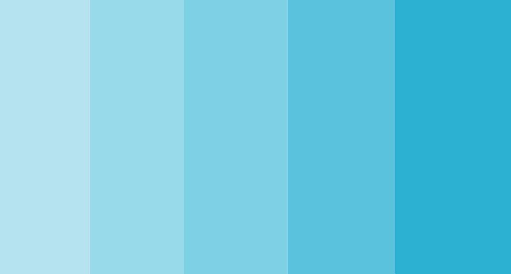

Avances del Proyecto Donar+
La propuesta de nuestra página web se centra en promover y facilitar la donación de sangre, siendo nuestra actividad principal como organización sin fines de lucro. Nuestro objetivo principal es concientizar a la población sobre la importancia de donar sangre y brindarles la información necesaria para que se conviertan en donantes activos.
El sitio web que queremos crear tiene como objetivo principal educar a la comunidad sobre los beneficios de la donación de sangre y proporcionarles los recursos necesarios para que puedan participar de manera efectiva. Además, deseamos facilitar el proceso de donación, brindando información sobre los requisitos, ubicaciones de centros de donación y horarios disponibles.
Para atraer tráfico al sitio web, nos enfocaremos en el SEO al utilizar palabras clave relevantes, utilizaremos estrategias de marketing de contenidos para crear artículos y recursos informativos que sean valiosos para los usuarios interesados en la donación de sangre, y compartiremos estos contenidos en nuestras redes sociales.
Público Objetivo
- Edad: El público objetivo puede abarcar principalmente a adultos jóvenes y de mediana edad, con edades comprendidas entre los 18 y 45 años. Esta es la franja de edad más activa y dispuesta a participar en actividades de donación de sangre.
- Sexo: Tanto hombres como mujeres son parte del público objetivo en la donación de sangre. Ambos sexos pueden estar igualmente interesados en contribuir a esta causa.
- Aficiones e inquietudes: El público objetivo puede estar interesado en temas relacionados con la salud, el bienestar, la solidaridad y la ayuda a los demás. Pueden tener inquietudes acerca de la salud de sus seres queridos y estar motivados por hacer una diferencia positiva en la sociedad.
- Nacionalidad: dirigida específicamente a personas que residen en Argentina
- Poder adquisitivo: la donación de sangre es un acto voluntario y no está directamente relacionado con el nivel de ingresos. El público objetivo puede incluir personas de diferentes niveles socioeconómicos que estén dispuestas a donar sangre por razones humanitarias y de solidaridad.
Identidad Visual
Logo:

Paleta de colores:
Fav-Icon:
Eslogan: "¡Dona sangre, dona vida!"
Dominio: donarmas.org
Palabras Claves: Donación, Donar, Donantes, sangre, banco, Transfusión, requisitos, centros de atención, grupo sanguíneo, salvar vidas, beneficios, proceso, campaña.
Cuando los internautas lleguen al sitio web de donación de sangre, es importante que sientan lo siguiente:
- Sensación de importancia
- Confianza y credibilidad
- Sentimiento de apoyo y solidaridad
- Claridad y facilidad de uso
- Motivación para la acción

Roles del equipo
- Diseñador UX/UI: Priscila Challa
- Maquetador: Cristian Jaimes
- Programador: Magali Saavedra
- Comunicador Web: Magali Saavedra